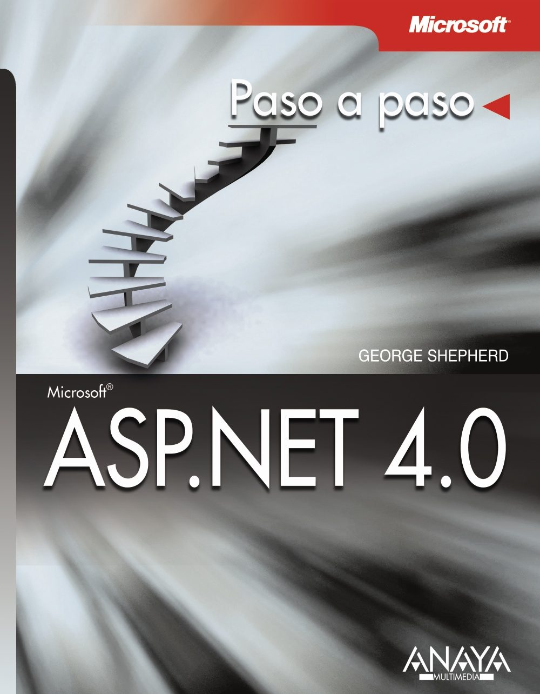

Índice.
¿Para quién es este libro?
Cómo empezar
Encontrar el mejor punto de partida libro
Convenciones utilizadas en este libro
Ejemplos del libro
Parte I. Conceptos básicos
1. Conceptos básicos de la aplicación Web
Peticiones HTTP
Peticiones HTTP desde un navegador
Realizar peticiones HTTP sin un navegador
Lenguaje HTML
Contenido dinámico
Formularios HTML
Common Gateway Interface: muy retro
El entorno de Microsoft como servidor Web
Internet Information Services
Las DLL de extensión ISAPI
Ejecutar Internet Information Services
ASP Clásico: poner ASP.NET en perspectiva
Conceptos del desarrollo Web
ASP.NET
Referencia rápida
2. Fundamentos de la aplicación ASP.NET
La aplicación convencional Hello World
Mezclar HTML con código ejecutable
Bloques ejecutables en el servidor
Un viaje a través de la arquitectura ASP.NET
El modelo de compilación de ASP.NET
Opciones de codificación
El estilo ASP.NET 1.x
Estilo ASP.NET moderno
El conducto HTTP de ASP.NET
Los conductos de IIS 5.x y de IIS 6.x
El conducto integrado en IIS 7.0
Utilizar el conducto
Visual Studio y ASP.NET
Sitios Web IIS locales
Sitios Web basados en el sistema de archivos
Sitios Web FTP
Sitios Web remotos
HelloWorld y Visual Studio
Referencia rápida
3. El modelo de interpretación de páginas
Interpretar controles como etiquetas
Empaquetar la interfaz de usuario en componentes
La página que utiliza ASP
El modelo de interpretación de la página
El árbol de control de la página
Añadir controles utilizando Visual Studio
Consideraciones de diseño
Referencia rápida
4. Controles personalizados
La clase Control
Visual Studio y los controles personalizados
Un verificador de palíndromos
Controles y eventos
HtmlTextWriter y los controles
Los controles y ViewState
Referencia rápida
5. Controles compuestos
Controles compuestos y controles personalizados
Controles compuestos personalizados
Controles User
Cuándo utilizar cada tipo de control
Referencia rápida
6. Popurrí de controles
Validación
Cómo funciona la validación de página
Propiedades del validador
Controles de imágenes
TreeView
MultiView
Referencia rápida
Parte II. Características avanzadas
7. Un diseño y un comportamiento consistentes
Gestionar la consistencia de la interfaz de usuario
Páginas maestras en ASP.NET
Temas
Máscaras
Referencia rápida
8. Configuración
Configuración de Windows
Configuración de .NET
machine.config
Manejadores de sección de configuración
web.config
Administrar la configuración en ASP.NET 1.x
Administrar la configuración en versiones posteriores de ASP.NET
Configurar ASP.NET desde IIS
Referencia rápida
9. Iniciar sesión
Seguridad Web
Asegurar IIS
Autenticación mediante formularios básica
Servicios de autenticación de ASP.NET
La clase FormsAuthentication
Página de inicio de sesión opcional
Administrar usuarios
Controles de inicio de sesión de ASP.NET
Autorizar usuarios
Referencia rápida
10. Enlace de datos
Representar colecciones sin enlace de datos
Representar colecciones con enlace de datos
Controles basados en ListControl
Control TreeView
Enlace de datos simple
Acceder a bases de datos
La historia de la base de datos de .NET
Conexiones
Comandos
Administrar resultados
Orígenes de datos en ASP.NET
Otros controles de datos enlazados
LINQ
Referencia rápida
11. Navegación por sitios Web
Navegación en ASP.NET
Controles de navegación
Mapas del sitio XML
SiteMapProvider
La clase SiteMap
SiteMapNode
Utilizar controles de navegación
Los controles Menu y TreeView
Control SiteMapPath
Configuración de SiteMap
Construir sitios Web navegables
Capturar el evento SiteMapResolve
Definir atributos personalizados para cada nodo
Reducción de seguridad
Asignación de URL
Reescribir URL
Referencia rápida
12. Personalización
Personalizar las visitas Web
Personalización en ASP.NET
Perfiles de usuario
Proveedores de personalización
Utilizar la personalización
Definir perfiles en web.config
Utilizar información de perfil
Guardar cambios en el perfil
Perfiles y usuarios
Referencia rápida
13. Elementos Web
Breve historia de los elementos Web
Ventajas de los elementos Web
Desarrollar controles de elementos Web
Desarrollo de una página de elementos Web
Desarrollo de una aplicación de elementos Web
La arquitectura de los elementos Web
WebPartManager y WebZones
Zonas integradas
Elementos Web integrados
Desarrollar un elemento Web
Referencia rápida
Parte III. Caché y administración de estado
14. Estado de sesión
¿Por qué estado de sesión?
ASP.NET y el estado de sesión
Introducción al estado de sesión
Estado de sesión y datos más complejos
Configurar el estado de sesión
Desactivar el estado de sesión
Almacenar el estado de sesión en proceso
Almacenar el estado de sesión en un servidor de estado
Almacenar el estado de sesión en una base de datos
Realizar el seguimiento del estado de sesión
Seguimiento del estado de sesión con cookies
Seguimiento del estado de sesión con la URL
Utilizar la detección automática
Aplicar los perfiles de dispositivo
Tiempo de espera del estado de sesión
Otros ajustes de configuración de sesión
El control Wizard: una alternativa al estado de sesión
Referencia rápida
15. Caché de datos de la aplicación
Empezar con la caché
Utilizar la caché de datos
Impacto de la caché
Administrar la caché
DataSet en memoria
Vencimientos de la caché
Dependencias de caché
La dependencia SQL Server
Borrar la caché
Referencia rápida
16. Caché de resultados
Almacenar en caché el contenido de la página
Administrar el contenido de la caché
Modificar la directiva OutputCache
La clase HttpCachePolicy
Ubicaciones de la caché
Dependencias de la caché de resultados
Perfiles de caché
Almacenar en caché los controles de usuario
Cuándo tiene sentido utilizar la caché de resultados
Otros proveedores de caché
Referencia rápida
Parte IV. Diagnóstico e instalaciones
17. Diagnóstico y depuración
Seguimiento de la página
Activar el seguimiento
Instrucciones de seguimiento
Seguimiento de la aplicación
Activar el seguimiento de forma programática
El evento TraceFinished
Canalizar otros mensajes de seguimiento
Depurar con Visual Studio
Páginas de error
Excepciones no manejadas
Referencia rápida
18. La clase HttpApplication y los módulos HTTP
La aplicación: un punto de encuentro
Invalidar HttpApplication
Advertencias sobre el estado de la aplicación
Manejar eventos
Eventos HttpApplication
HttpModules
Módulos existentes
Implementar un módulo
Ver módulos activos
Almacenar el estado en módulos
Global.asax y HttpModules
Referencia rápida
19. Manejadores HTTP
Manejadores de peticiones ASP.NET
Manejadores predeterminados
IHttpHandler y los manejadores
Manejadores y estado de sesión
Manejadores genéricos (archivos ASHX)
Referencia rápida
Parte V. Datos dinámicos, XBAP, MVC, AJAX y Silverlight
20. Datos dinámicos
Controles de datos dinámicos
Más información sobre los datos dinámicos
Referencia rápida
21. ASP.NET y el contenido WPF
Mejorar el rendimiento reduciendo viajes de ida y vuelta
¿Qué es WPF?
¿Cómo se relaciona WPF con la Web?
Archivos XAML dinámicos
Aplicaciones XBAP
Contenido WPF y las aplicaciones Web
¿Qué pasa con Silverlight?
Referencia rápida
22. Estructura MVC en ASP.NET
La arquitectura MVC (Modelo-Vista-Controlador)
ASP.NET y MVC
MVC en ASP.NET y los formularios Web
MVC y las pruebas
Cómo funciona MVC con ASP.NET
Seguir la ruta de las peticiones
Referencia rápida
23. AJAX
Aplicaciones ricas de Internet
¿Qué es AJAX?
ASP.NET y AJAX
Razones para utilizar AJAX
AJAX en el mundo real
AJAX en perspectiva
Compatibilidad de servidor de ASP.NET con AJAX
Control ScriptManager
Control ScriptManagerProxy
Control UpdatePanel
Control UpdateProgress
Control Timer
Compatibilidad de AJAX con el cliente
El kit de herramientas de control de AJAX para ASP.NET
La mezcla del kit de herramientas de control AJAX
Familiarizarse con AJAX
El control Timer
Actualizar el progreso
Controles extensores
Extensor AutoComplete
Un componente modal de tipo diálogo emergente
Referencia rápida
24. Silverlight y ASP.NET
Las aplicaciones Web maduran
¿Qué es Silverlight?
Crear una aplicación Silverlight
Arquitectura
XAML
Construir el árbol visual
XAML y los espacios de nombres
Compilar la aplicación Silverlight
Añadir contenido Silverlight a una página Web
Utilizar la etiqueta Object
Utilizar el control de servidor Silverlight en ASP.NET
Utilizar la función JavaScript
Controles y eventos
Eventos enrutados
Controles Silverlight y miembros de clase
Silverlight y el diseño
Integración con HTML
Animaciones
Servicios WCF y Silverlight
Referencia rápida
Parte VI. Servicios e implementación
25. Windows Communication Foundation
El regreso de la informática distribuida
Una API de comunicaciones fragmentada
WCF para sistemas conectados
Elementos que forman WCF
Extremos
Canales
Comportamientos
Mensajes
Cómo funciona WCF con ASP.NET
En paralelo
Modo de compatibilidad de ASP.NET
Escribir un servicio WCF
Generar un cliente WCF
Referencia rápida
26. Implementación
Sitios Web de Visual Studio
Sitios Web HTTP
Sitios Web FTP
Sitio Web basado en el sistema de archivos
Precompilar
Precompilar por rendimiento
Precompilar para la implementación
Funcionalidad de implementación en Visual Studio 2010
Referencia rápida
Apéndice. Archivos de ejemplo
Descarga de los archivos de ejemplo
Uso de los archivos de ejemplo
Requisitos del sistema en alfabético


 1
1 2
2 3
3 4
4 7
7 9
9 12
12 13
13 14
14 15
15 16
16 18
18 21
21 22
22 23
23